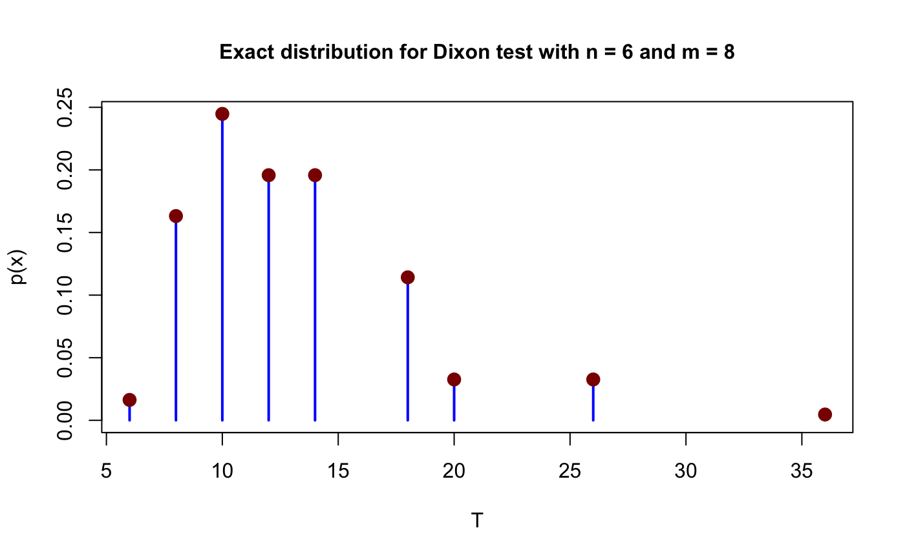
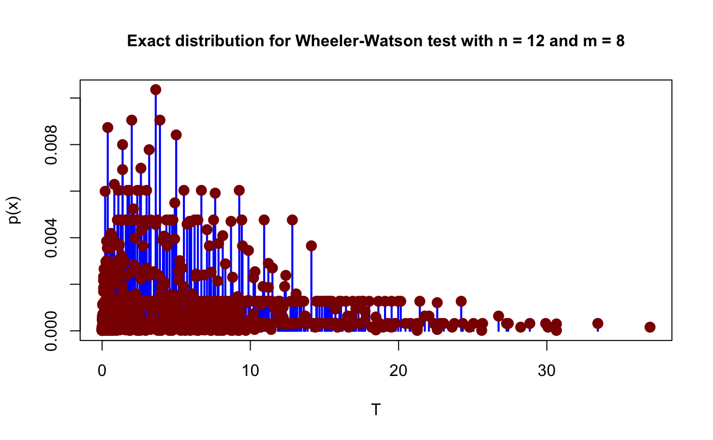

Compute critical values for circular tests
get_critical_values(n, m, test = "dixon", alpha = 0.05)
| alpha | Significance level |
|---|---|
n |
total of frequencies |
m |
number of spacings |
test |
considered test ( |
A list with the following structure:
test distribution under H0
brackets values and associated p-values
considered test
considered alpha
total of frequencies
number of spacings
crit_val = get_critical_values(6,8) crit_val#> Bracketing values (c1, c2) corresponding to significance levels (p1, p2) #> for Dixon test based on the significance level 0.05 #> c1 = 20 (p1 = 0.0699) #> c2 = 26 (p2 = 0.0373)plot(crit_val)crit_val = get_critical_values(12, 8, test = "ww") crit_val#> Bracketing values (c1, c2) corresponding to significance levels (p1, p2) #> for Wheeler-Watson test based on the significance level 0.05 #> c1 = 14.7734 (p1 = 0.05) #> c2 = 14.8339 (p2 = 0.0497)plot(crit_val)